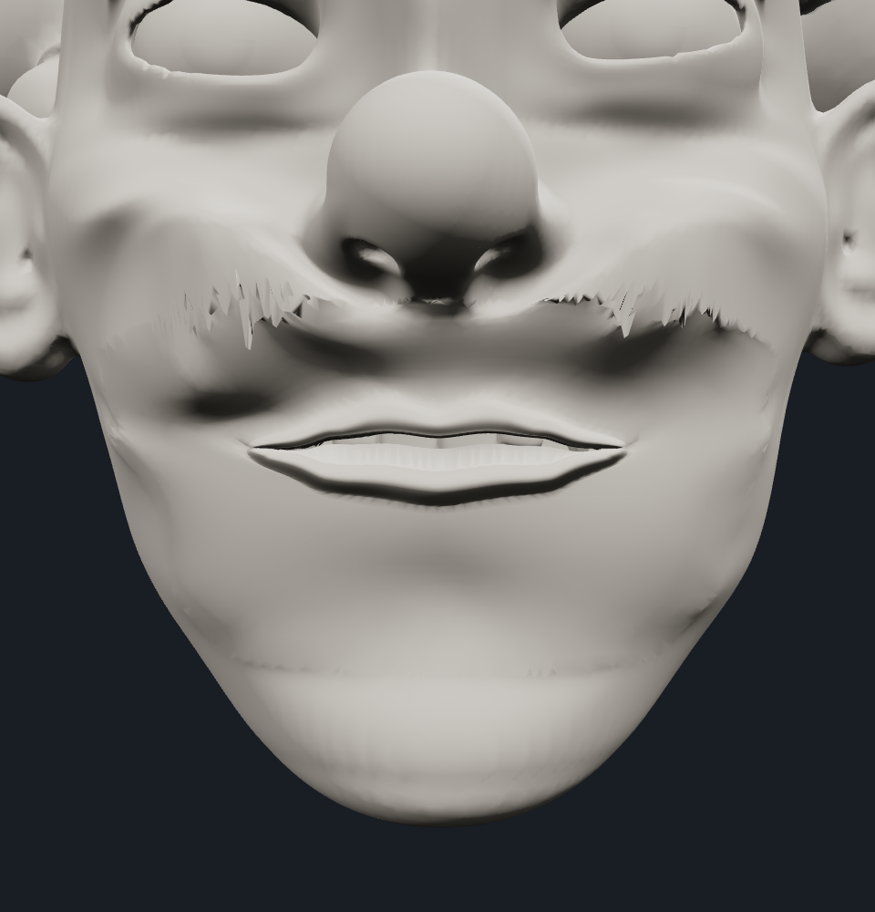
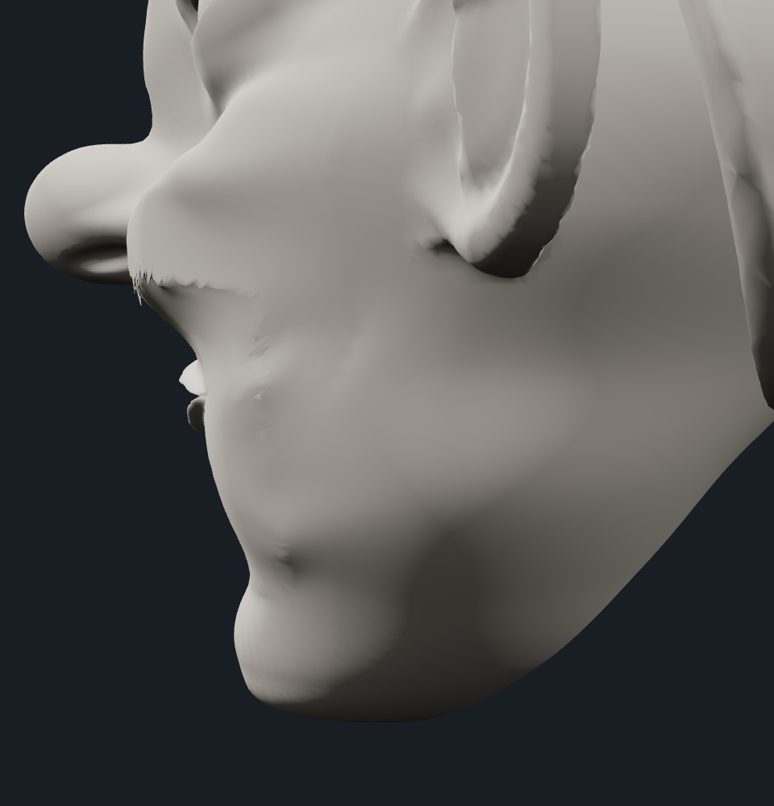
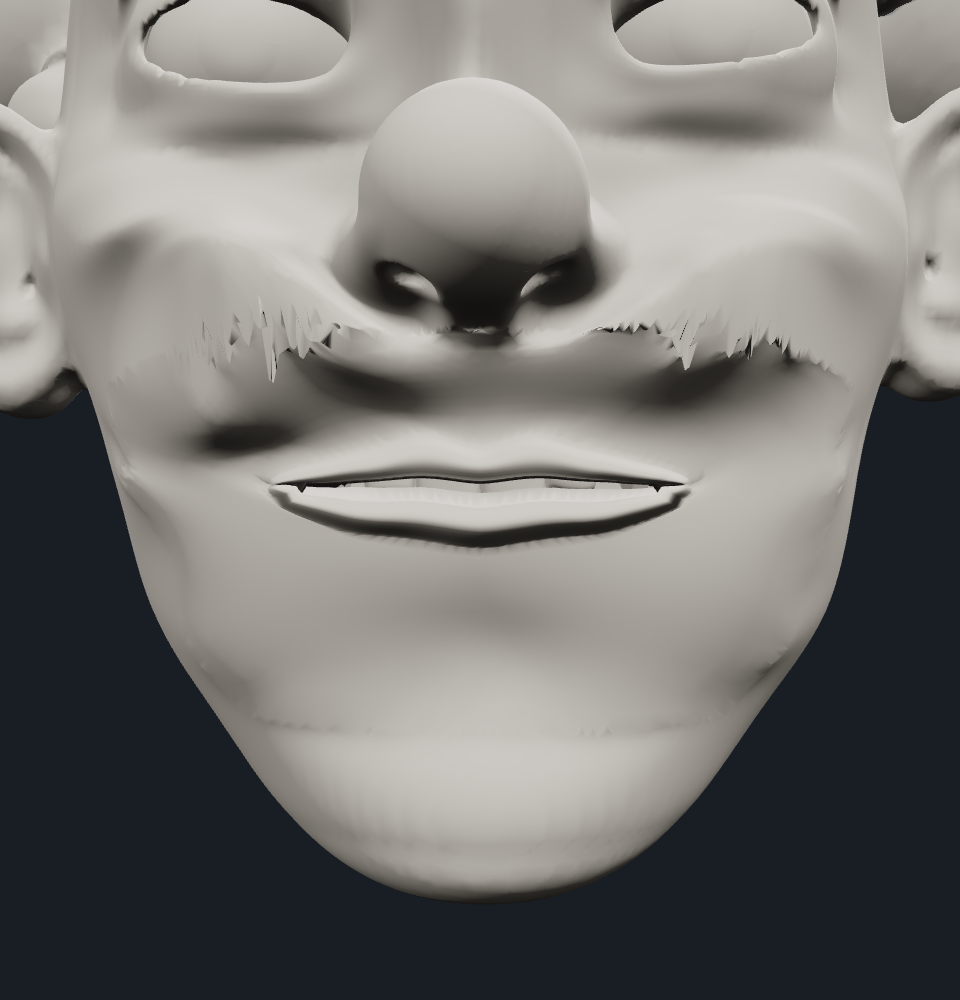
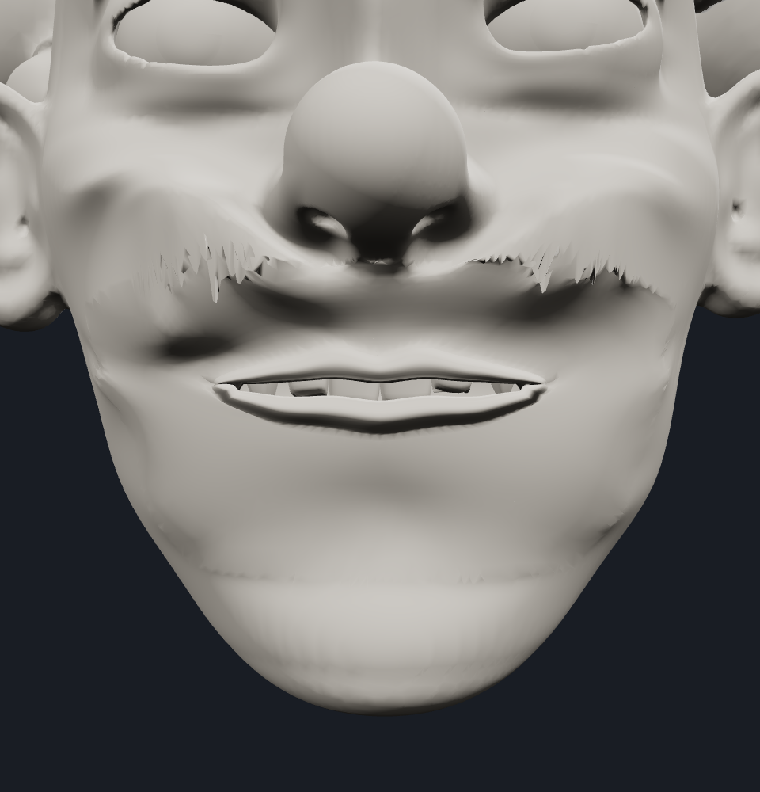
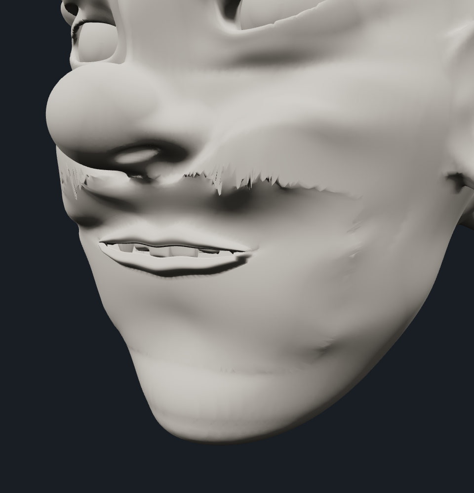
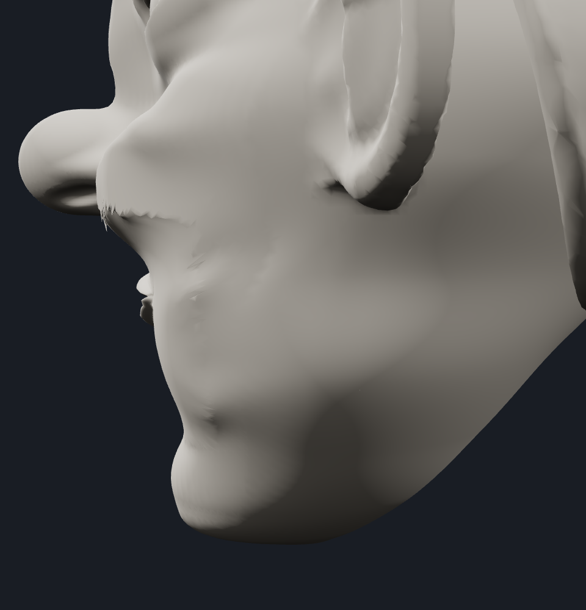

Local prototype for user review. Not committed or deployed. Only Local-17 skin is rendered; the donor remains hidden numeric control data.
The flat band was identified by ray probe as a lower inner vestibule triangle, not teeth or gums. It remained high as the lower edge descended. Correct upper/lower cage correspondence now carries that wall with its associated lip. The dental geometry and transforms were not changed.
Upper opening displacement is smoother and relatively maxilla-anchored; the original Cupid sculpt is retained. Lower-lip cross-sections move together, creating central separation and tapering around the dental arch without scaling their thickness. The previous commissure field remains.
The six requested views pass this focused visual review: teeth are individually visible behind the lip frame, the flat wall is cleared, the lower edge curves centrally and tapers toward corners, and no new corner notch or chin collapse is identified. Original Local-17 surface irregularities remain.
Rest position, normal and index hashes match Local-17 before and after both poses. No new rest screenshot set, full suites, intersection checks, 40% test, presets or deployment were run. This is not full animation/release approval.
Local-17 and Local-24 remain preserved. Hair, skull, nose, eyes, ears, jaw/dental source, donor rest shape and production are unchanged.
Local interactive review · Automatic rest checks · Gate record





